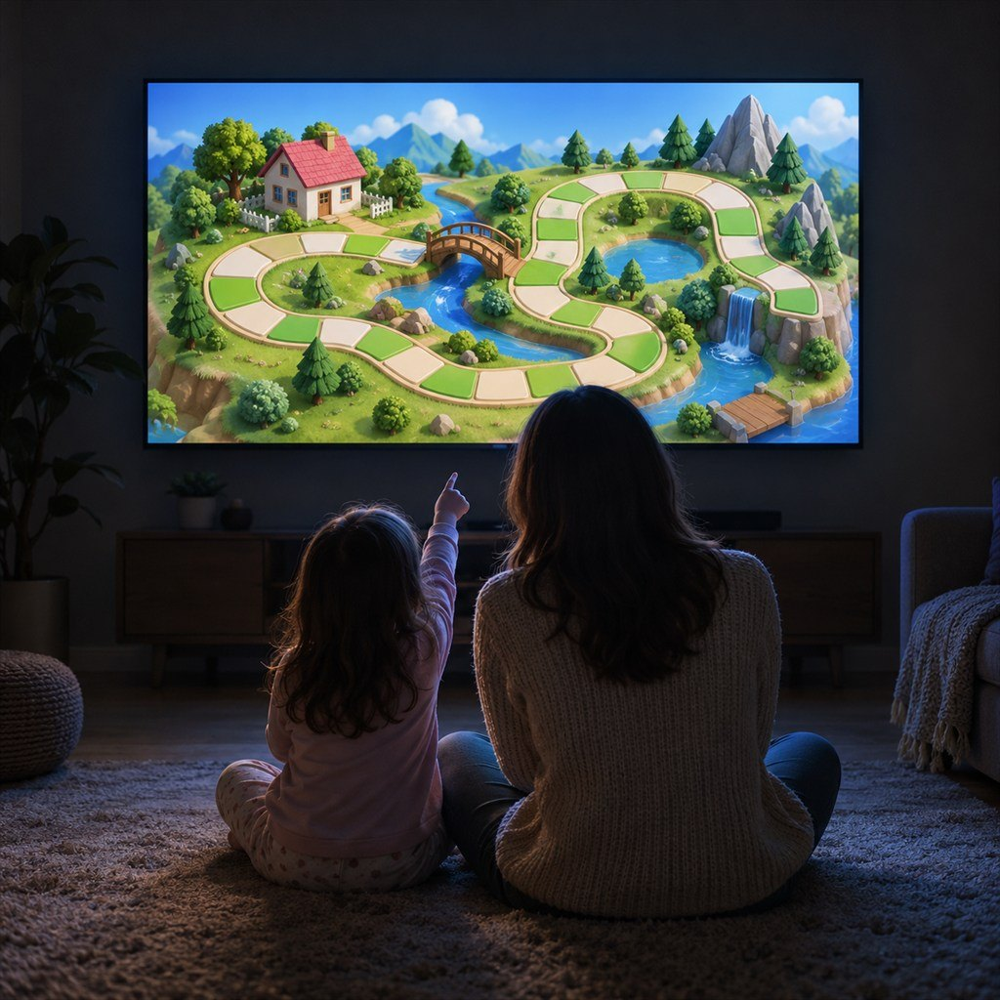
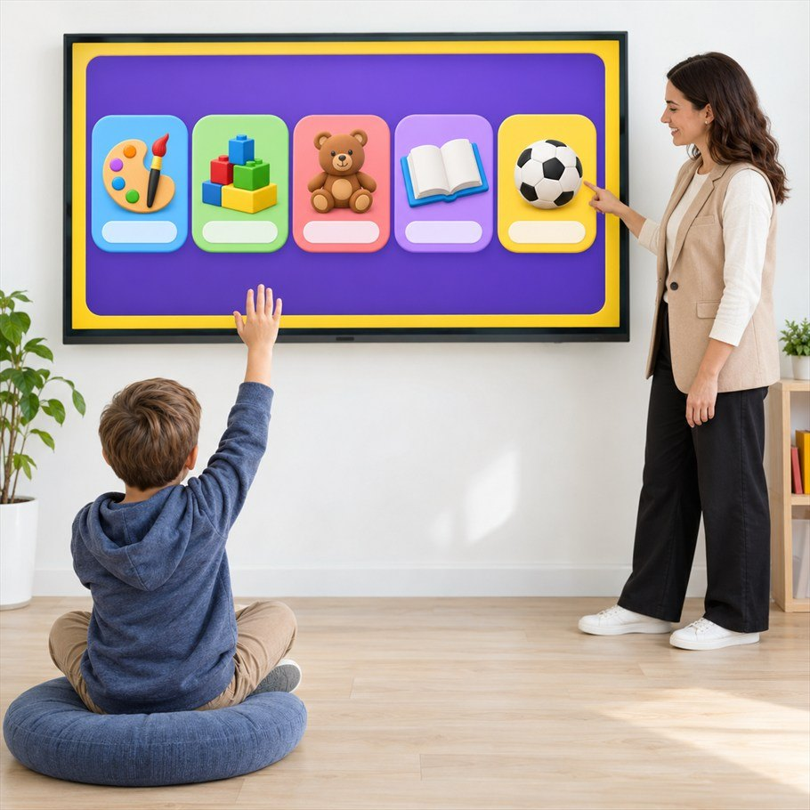
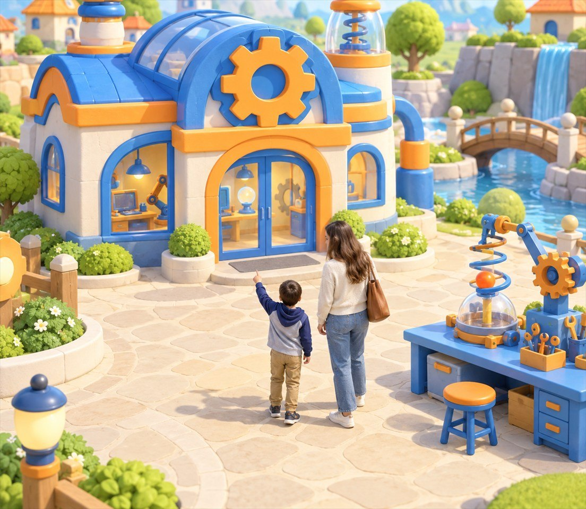
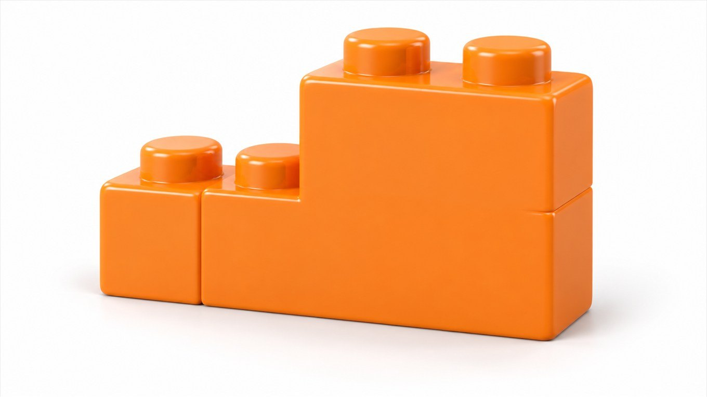

말문이 트이는 놀이,
피코링고
모든 표현을 안 뒤에 말하는 것이 아니라
'내가 답하고 싶어서' 먼저 말합니다
피코링고에서 만난 오늘의 장면을
리나 선생님에게 들려주세요
듣고 움직이고 직접 답하는
하루 말하기 활동의 세 단계
새로운 장면을 탐색하는 활동을 하고,
리나 선생님과 편안하게 나누어요.
직접 해 본 일을 자기 말로 이어 갑니다
정해진 예문만 외우는 대신
아이 스스로 보고 고른 장면을
상대에게 설명하는 과정에서
영어로 답하는 부담을 낮추고 참여 경험을 쌓습니다

이야기 속에서 만나는 영어 놀이
피코섬 곳곳에는 아이가 듣고 반응할 영어 장면이 펼쳐집니다.
캐릭터를 돕고 물건을 고르는 행동이 자연스럽게 듣기와 말하기로 이어집니다.
아이의 답을 듣고 현재 흐름에 맞게
다음 말을 건네는 대화 도우미
미리 정한 한 문장만 들려주는 방식이 아니라
아이의 응답에 따라 다음 질문을 바꾸며 대화를 이어 갑니다.
선택할수록 또렷해지는 나만의 학습 길
모두에게 같은 순서를 강요하지 않고,
아이가 관심 있는 활동과 지금 가능한 말을 고릅니다.

피코링고는 아이가 남긴 활동 기록을 바탕으로
자주 고르는 장면과 익숙한 표현, 더 연습할 영역을 함께 살핍니다.
덜 만난 영역은 부담 없는 장면으로 다시 제안하고,
좋아하는 주제는 더 넓은 문장으로 이어지게 돕습니다.
변화 속에서 자기 길을 찾는 힘
하나의 정답만 따라가기 어려운 시대에는
아이가 관찰하고 선택하며 이유를 말하는 경험이 필요합니다.
배우고 일하는 모습도 계속 바뀌고
미리 정해 둔 길만으로는 미래를 설명하기 어렵습니다.
이제는익숙한 문제도 다른 관점에서 살펴봐야합니다.
시도하고 고쳐 보는 과정을 받아들이고
새로운 것을 찾아낸 순간을 즐기는 사람으로
자라야 합니다.

아이의 작지만 분명한 해결 경험이
틀릴까 멈추기보다 다시 시도하는 태도을 편안하게 시도할 수 있는로 이어지는 바탕이 됩니다.
말하기에 필요한 여러 기초를
한 문장 안에서 함께 익힙니다
소리만 따라 하거나 듣는 데 그치면
내 생각을 영어로 전하기 어렵습니다.
낱말과 문장, 소리의 특징을 이해하고
장면을 살핀 뒤 생각을 골라 말하는 과정이 함께 필요합니다.
피코링고는 아이가 영어를 듣고 뜻을 찾은 뒤 직접 답하도록
여섯 가지 기초 영역을 한쪽에 치우치지 않게 연결합니다.
어휘
Vocabulary낱말은 말하기의 재료입니다. 여러 장면에서 알맞은 단어를 찾아 쓰며 표현 범위를 넓힙니다.
소리
Phonics영어 소리의 차이와 리듬을 듣고 따라 하며, 알아듣고 또렷하게 말하는 바탕을 만듭니다.
표현
Expression인사, 부탁, 선택처럼 장면에 알맞은 표현을 골라 실제 주고받기에 활용합니다.

문법
Grammar낱말이 놓이는 순서를 이해하고 뜻이 분명한 문장을 스스로 조합합니다.
읽기
Reading글로 본 낱말과 문장의 뜻을 연결하고, 읽은 내용을 자기 말로 다시 설명해 봅니다.
논리 + 사고
Logic & Thinking단서를 비교하고 순서를 정한 뒤 까닭을 영어로 말하며 생각과 표현을 함께 다듬습니다.